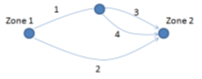
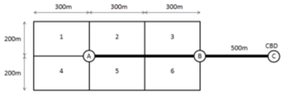

Final Exam Preparation
Short Answer Comprehension – Answer may be in point form. The number of points should be roughly based on the number of marks allocated to the question.
Problem 1. Explain why it is recommended to have an intercept in a linear regression model. (3 marks)
Problem 2. Describe (preferably in precise statistical terms) the use of t-statistics for the evaluation of a trip generation model. (5 marks)
Problem 3. What does it mean if a linear regression trip generation model has an \(R^2\) of 0.65? (5 marks)
Problem 4. Explain the difference between model calibration and model validation. (5 marks)
Problem 5. Consider that you are working as a transportation planner for the City of Lincoln and are in-charge of evaluating the impacts of the COVID-19 pandemic on future transit ridership in Lincoln. As part of this job, you are asked to design a data collection program. Please delineate your design in terms of what type of data you’d prefer to collect, along with your sampling strategy. Please be concise and justify any specific decision you make in this regard. (4 marks)
Problem 6. Consider a transportation company that provides bus transit service to the elderly and people with disabilities in a small city in a contract with the local municipality. Develop a set of performance measures from the perspectives of the transportation company, the county government, and the service users. (4 marks)
Problem 7. It is proposed to widen an existing arterial street to make way for an HOV facility. List appropriate performance measures from the point of view of (4 marks)
- the owner (local highway agency)
- facility users
- nonusers who are affected by the system.
Short answer quantitative – Comprehension of quantitative concepts in the course and the ability to perform simple calculation as a demonstration.
Problem 1. A w% increase in downtown parking costs resulted in an f% reduction in downtown auto trips and a g% increase in transit ridership for downtown routes. Derive expressions for the arc elasticities of auto and transit demand with respect to parking costs. (4 marks)
Problem 2. The aggregate demand for a bus transit service serving a newly developed suburban area is represented by the equation: (4 marks) \[V = 300 - 40p^2\] where \(V\) is the number of trips made per month and \(p\) is the average price of a ticket for the trip. In a given month, the average price was $0.75.
What is the point elasticity of demand for the bus transit service with respect to price?
Problem 3. Consider the following two AM peak work trip generation models, estimated by household linear regression: (4 marks) \[y=0.50(2.5) + 2.0(6.9) x_1 + 1.5(5.6) x_2 \text{, }R^2=0.589\] \[y=0.01(0.9) + 2.3(4.6) x_1+1.1(1.9) z_1+4.1(3.4) z_2 \text{, }R^2=0.601\]
Note: number within ( ) refers to the t-statistics of the coefficients above. where \(y\) are household trips to work in the morning peak, \(x_1\) is the number of workers in the household, \(x_2\) is the number of cars in the household, \(z_1\) is a dummy variable which takes the value of 1 if the household has one car, and \(z_2\) is a dummy which takes the value of 1 if the household has two or more cars. Choose one of the models clearly explaining the reasoning behind your decision.
Long-form quantitative answer-A longer question requiring multiple calculations.
Problem 1. The number of automobile trips per hour (V) between two midwestern cities has the following function: (4 marks) \[V_a = \alpha T_a^{-2.0} T_t^{+0.5} C_a^{-0.5} C_t^{+0.6}\]
where \(T_a\) and \(T_t\) are the travel time for auto and transit, respectively; \(C_a\) and \(C_t\) are the out-of-pocket costs for auto and transit, respectively; and \(\alpha\) is a constant that reflects the size and average income of the population.
At the current time, there are 50,000 automobile trips between the cities every day. If a new parking policy results in an increase of out-of-pocket auto costs from $5 to $6, what will be the change in demand?
In addition to part (a), if transit facility improvements lead to a reduction in transit time from 1 hour to 45 minutes, what would be the new demand for automobile travel between the two cities?
Problem 2. The following table presents data collected in the last household O–D survey (made ten years ago) for three particular zones: (4 marks)
Table 2.1. Zone Attributes
| Zone | Members per Household | Workers per Household | Mean Income | Population |
|---|---|---|---|---|
| I | 2.0 | 1.0 | 50,000 | 20,000 |
| II | 3.0 | 2.0 | 70,000 | 60,000 |
| III | 2.5 | 2.0 | 100,000 | 100,000 |
Ten years ago two household-based trip generation models were estimated using this data. The first was a linear regression model given by: \[y=0.2+0.5x_1+1.1z_1 \text{, }R^2=0.78\]
where y is household peak period trips, \(x_1\) is the number of workers in the household, and \(z_1\) is a dummy variable that takes the value of 1 if household income is over 70,000 and 0otherwise. The second was cross-classification analysis model based on two income strata (high and low income) and two levels of family income (1 or fewer and 2 or more workers per households). The estimated trip rates are:
Table 2.2. Trip Rates by Family Attributes
| Family Structure | Income | |
|---|---|---|
| Low | High | |
| 1 or fewer | 0.8 | 1.0 |
| 2 or more | 1.2 | 2.3 |
If the total number of trips generated today during the peak hour by the three zones are given by:
Table 2.3. Peak Period Trips
| Zone | Peak Period Trips |
|---|---|
| I | 8,200 |
| II | 24,300 |
| III | 92,500 |
and it is estimated that the zone characteristics (income, number of households and family structure) have remained stable, decide which model is best. Explain your answer.
Problem 3. There is a demand of 600 trips from zone A to zone B. Two modes are available for travelling from zone A to zone B, transit and single occupant automobile. A binary logit model has been developed that predicts mode choice between those zones with the following utility functions:
\[V(transit)=-0.20-0.15IVTT(transit)-0.30TWALK(transit) - 0.40 TWAIT(transit) - 0.20 COST(transit)\]
\[V(auto)=-0.25 IVTT(auto)\]
where \(IVTT\), \(TWALK\), and \(TWAIT\) are in-vehicle travel time, walk time and wait time, measured in minutes and \(COST\) is in dollars.
Table 3.1. Transit Route Characteristics
| Light Rail transit in dedicated right of way | |
| Line length (from A to B) | 10 km |
| Number of intermediate stops | 1 stop, located halfway along the route. |
| Dwell time per intermediate stop | 30 s |
| Cruise speed | 80 km/h |
| Acceleration | 2.5 m/s2 |
| Deceleration | 2.5 m/s2 |
| Headway | 5 min |
| Transit Fare | $5.00 |
For transit users, assume an average zonal walk time for all trips to/from the stations. Stations are at the centroids of zones A and B, which are 400m x 600m rectangular zones. Zones have randomly distributed origins-destinations and a Manhattan grid. Walking speed is 1.25m/s.
Auto in vehicle travel time depends on a BPR formula as follows:
\[IVTT(auto) = (60L/S)*(1 + (v/c)^4)\] Road length (L) = 10 km Free flow speed (S) = 65 km/hr Road capacity (c) = 550 veh/hr
Assume that only vehicles travelling from A to B use the highway.
Determine the in-vehicle travel time by transit. (6 marks)
Determine the expected walk and wait time for transit. (4 marks)
Determine the mode shares that would be predicted by the model assuming free flow roadway travel times. (5 marks)
Determine the number of vehicles (to the nearest 50) on the road that would be predicted by the model assuming congested roadway travel times (Hint, you can use trial and error). (10 marks)
Problem 4. Table 1 contains a list of daily household work trips and associated household attributes obtained from a travel survey. Choose appropriate data from this table to construct a (household-level) cross-classification daily work trip generation model. Do not use more than two classifying attributes in the model.
Table 4.1: Travel Survey Data
| Household Number | Zone of Residence | Number of Adults | Number of Children | Daily HH Work Trips | Number of Vehicles |
|---|---|---|---|---|---|
| 1 | 235 | 1 | 0 | 2 | 1 |
| 2 | 500 | 2 | 1 | 3 | 3 |
| 3 | 500 | 2 | 1 | 5 | 2 |
| 4 | 500 | 3 | 2 | 2 | 3 |
| 5 | 43 | 2 | 0 | 2 | 2 |
| 6 | 235 | 2 | 0 | 4 | 1 |
| 7 | 500 | 2 | 3 | 2 | 2 |
| 8 | 25 | 2 | 2 | 5 | 2 |
| 9 | 235 | 1 | 0 | 1 | 0 |
| 10 | 25 | 1 | 2 | 2 | 2 |
| 11 | 500 | 2 | 2 | 4 | 1 |
| 12 | 235 | 2 | 2 | 2 | 1 |
| 13 | 235 | 2 | 2 | 3 | 0 |
| 14 | 235 | 4 | 2 | 4 | 1 |
| 15 | 43 | 2 | 0 | 2 | 2 |
| 16 | 25 | 1 | 0 | 2 | 2 |
| 17 | 500 | 2 | 0 | 4 | 1 |
| 18 | 25 | 3 | 2 | 4 | 3 |
| 19 | 25 | 1 | 0 | 3 | 0 |
| 20 | 235 | 2 | 1 | 4 | 2 |
| 21 | 25 | 1 | 0 | 2 | 1 |
| 22 | 25 | 2 | 2 | 2 | 0 |
| 23 | 500 | 1 | 1 | 0 | 0 |
| 24 | 43 | 2 | 0 | 4 | 4 |
| 25 | 235 | 2 | 2 | 4 | 2 |
| 26 | 43 | 3 | 0 | 0 | 0 |
| 27 | 43 | 1 | 0 | 0 | 1 |
| 28 | 43 | 2 | 1 | 4 | 2 |
| 29 | 25 | 1 | 1 | 2 | 1 |
| 30 | 25 | 2 | 0 | 2 | 1 |
Problem 5. Consider the 2 zone system shown below, with a 4 link road network. 7000 vehicles are travelling from Zone 1 to Zone 2 in the am peak hour. The peak hour volume delay function for each link uses the BPR formula as follows: \[f(V_l)=L/S(1+(v/c)^b)\]

Link attributes are shown in Table 5.1.
Table 5.1 Link Attributes
| Link | L (mi) | S (mi/hr) | c (veh/hr) | b |
|---|---|---|---|---|
| 1 | 0.55 | 55 | 2,000 | 4 |
| 2 | 1.25 | 100 | 3,000 | 4 |
| 3 | 0.7 | 45 | 1,000 | 4 |
| 4 | 0.7 | 45 | 1,000 | 4 |
Conduct one iteration of Frank-Wolfe algorithm of DUE traffic assignment, considering your starting volume for V1= 3500 vph, V2=3500vph, V3=1750vph, V4=1750vph. λ = 0.57 for the first iteration. (10 marks)
What are the basic difference between deterministic and stochastic user equilibrium assumptions of traffic assignment? (2 marks)
For what type of traffic conditions, stochastic user equilibrium assignment would be appropriate (please show with a diagram)? (2 marks)
Explain the concept of System Optimal traffic assignment approach? (3 marks)
Do you think, with 60% vehicles on-road being connected and automated vehicles, it is possible to achieve a system optimal traffic distribution? Please explain. (3 marks)
Problem 6. Consider two transit routes: a) A “mid-town” route with one end terminating at a sub-regional center. b) A route from a suburb to the city center.
Characteristics for the 2 routes are provided in Table 6.1. The transit mode share for each route in the morning peak is given by a (auto versus transit) logit mode choice model with the following systematic utility functions:
\[V(transit)=-0.20 - 0.05 IVTT(transit) - 0.12 TWALK(transit) - 0.11 TWAIT(transit)\]
\[V(auto)=-0.05 IVTT(auto) - 0.20 COST(auto)\]
Table 6.1 Transit Route Characteristics
| Route | Current Frequency (buses/hr) | Transit | Auto | Total AM Peak Trips | |||
|---|---|---|---|---|---|---|---|
| IVTT (min) | TWALK (min) | COST ($) | IVTT (min) | COST ($) | |||
| 1 | 7 | 30 | 5 | 2 | 25 | 5 | 2,000 |
| 2 | 15 | 45 | 5 | 2 | 50 | 10 | 2,500 |
IVTT = in-vehicle travel time COST = travel cost TWALK = transit walk time TWAIT = transit wait time the transit route corridor during the morning peak Total AM Peak trips = total trips (all modes) made in
The transit agency has 4 new buses that it can allocate to only one of these two routes. Assuming that auto travel times remain constant:
- How many new passengers would be attracted to each route for such allocation of 4 new buses? (10 marks)
- For time spent in vehicles, what is the dollar value-of-time implied by the model? (2 marks)
- If traffic congestion causes an increase in Auto IVTT on Route 1 to 30 min and on Route 2 to 53 min, (considering bus IVTTs unchanged), what will be the new modal shares of the two routes? (8 marks)
Problem 7. A neighborhood with Manhattan grid road network consists of six traffic analysis zones. The population for each zone is given in Table 3. Average walking speed of people living in the neighborhood is \(1.5m/s^2\). An LRT line connects the neighborhood to the central business district (CBD). The rail line has a frequency of 5 trains per hour and has two stations in the neighborhood, as shown below. The LRT vehicle has an acceleration rate of \(1.3m/s^2\) and a deceleration rate of \(1.3m/s^2\), and a maximum speed of 40 km/hr. Consider that the trip origins and destinations uniformly distributed throughout each zone.
- Calculate the average intrazonal walk travel time (average walk time between two random points) for each zone. (5 marks)
- Calculate the average walk travel time for each zone to the nearest light rail station. (5 marks)
- Calculate the average wait time. State any additional assumptions you have made. (5 marks)
- What are the components of transit out-of-vehicle travel times? (5 marks)

Table 7.1: Zonal Population
| Zone | Population |
|---|---|
| 1 | 175 |
| 2 | 100 |
| 3 | 200 |
| 4 | 300 |
| 5 | 250 |
| 6 | 100 |
Problem 8. A gravity model has an impedance function \(fij = exp(\beta t_{ij})\), where \(t_{ij}\) is the travel time between zones \(i\) and \(j\).
- What does \(\beta\) represent? (2 marks)
- Should \(\beta\) be positive or negative? (2 marks)
- What model would result if \(\beta\) = 0 ? (2 marks)
Problem 9. Two linear regression trip generation models are listed below. Briefly critique each model in terms of its choice of variables and correspondence to available theory concerning trip generation behaviour. (8 marks)
HBW(h) = -0.1 NVEH(h) + 0.9 NWORK(h) + 0.1 NCHILD(h)
HBW(h) = Number of daily home-based work trip origins generated by household h
NVEH(h) = Number of vehicles in household h
NWORK(h) = Number of workers in household h
NCHILD(h) = Number of children under 16 years old in household h
NHB(i) = -500 + 0.1 POP(i) – 0.01 NCHILD(i) + 0.05 EMP(i)
NHB(i) = Number of daily non-home-based trips originating in zone i
POP(i) = Total population living in zone i
NCHILD(i) = Number of children living in zone i
EMP(i) = Total employment (jobs) in zone i